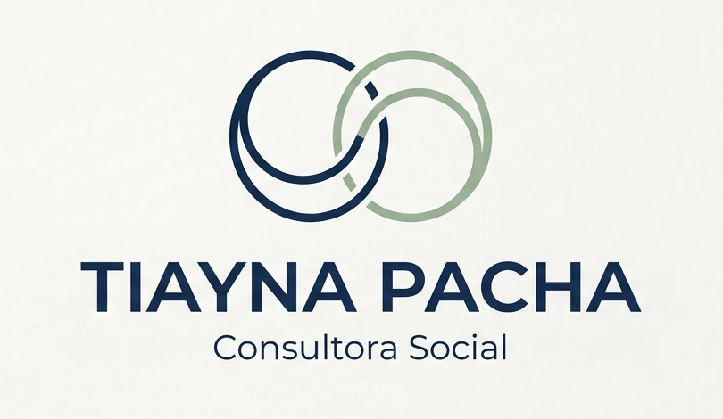

Orientación académica
Apoyo para interpretar instrucciones, organizar avances, resolver dudas y preparar entregas de manera responsable.
Apoyo académico en educación superior
Acompañamiento personalizado para organizar tu investigación, tomar decisiones metodológicas y avanzar con seguridad en cada etapa.
¿En qué consiste?
El servicio no se limita a corregir un documento terminado. Su propósito es ayudarte a entender la lógica de tu investigación, ordenar cada componente y tomar decisiones coherentes con tu tema, tus objetivos y las exigencias de tu institución.
Apoyo para interpretar instrucciones, organizar avances, resolver dudas y preparar entregas de manera responsable.
Revisión de la coherencia entre problema, pregunta, objetivos, enfoque, técnicas y análisis.
Cada encuentro puede cerrar con tareas, ajustes y próximos pasos para evitar la sensación de estar estancado.
El servicio orienta, explica y revisa. No sustituye la autoría del estudiante, no realiza evaluaciones en su nombre y no garantiza resultados académicos.
Áreas de apoyo
Los contenidos del afiche se desarrollan aquí como servicios concretos, con una explicación clara de lo que puede trabajarse en cada etapa.
Se trabaja la transformación de una idea amplia en un tema específico, investigable, relevante y posible de desarrollar con los recursos disponibles.
Se revisa que el problema describa una situación investigable y que la pregunta y los objetivos respondan a la misma lógica.
Se orienta la búsqueda, selección y organización de fuentes, evitando acumular citas sin una relación clara con el problema.
Se analiza qué diseño metodológico resulta coherente con los objetivos y cómo explicar de forma clara cada decisión.
Se revisa la claridad, continuidad y coherencia del texto, respetando el estilo académico y los lineamientos institucionales.
Se puede organizar el avance según los hitos solicitados por la carrera, profesor guía o comisión académica.
Proceso de trabajo
Un proceso claro ayuda a convertir las dudas en decisiones y los avances aislados en un proyecto coherente.
Se identifica la etapa del proyecto, la carrera, los plazos y la dificultad principal.
Se analizan pauta, rúbrica, instrucciones, avances y observaciones recibidas.
Se definen prioridades, tareas y una secuencia realista de avance.
Se explican conceptos, se revisan decisiones y se resuelven dudas específicas.
Se entregan observaciones concretas para mejorar el documento y fortalecer su coherencia.
Cada etapa concluye con claridad sobre qué corregir, qué desarrollar y cómo continuar.
Criterios de revisión
La revisión académica considera la relación entre las partes del proyecto, no solamente la ortografía o la presentación.
Modalidades de atención
Sesiones coordinadas previamente para revisar el proyecto, resolver dudas y trabajar los avances en conjunto.
Orientación mediante videollamada, útil para estudiantes de otras ciudades o con horarios limitados.
Revisión de avances y retroalimentación escrita, cuando el servicio contratado así lo contempla.

Experiencia profesional
Trabajadora Social · Licenciada en Trabajo Social
Magíster en Intervenciones y Estudios Avanzados en Trabajo Social y Magíster en Educación, mención Gestión Inclusiva.
Cuenta con trayectoria docente en educación superior, experiencia como docente guía de proyectos de título y formación vinculada con investigación, intervención social y educación.
Dudas frecuentes
Cada proyecto tiene necesidades distintas. Estas respuestas permiten comprender el alcance general del servicio.
No. El acompañamiento orienta, explica, revisa y entrega retroalimentación. La autoría, decisiones y responsabilidad académica siguen perteneciendo al estudiante.
Sí. La delimitación del tema y la revisión de viabilidad pueden trabajarse desde una etapa inicial.
Sí. Primero se revisa la pauta institucional y el estado actual para identificar prioridades y posibilidades de mejora.
Puede incluir orientación y revisión de citas y referencias, según el alcance previamente acordado.
Depende de la etapa, extensión, complejidad y plazos del proyecto. La frecuencia se acuerda después de la consulta inicial.
El acompañamiento se orienta especialmente a investigación social, educativa y áreas afines. La pertinencia se revisa antes de confirmar el servicio.
No. Las decisiones académicas corresponden a la institución, profesor guía o comisión. El servicio busca fortalecer el proceso y la calidad del trabajo.
Conversemos sobre tu proyecto
Indica tu carrera, etapa del proyecto, plazo principal y el tipo de dificultad que necesitas abordar.